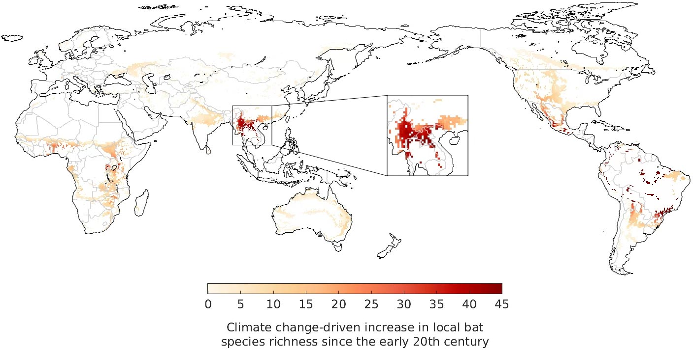
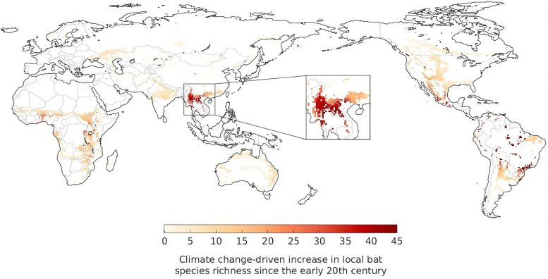
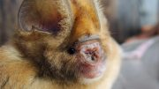
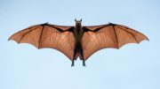
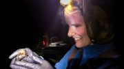
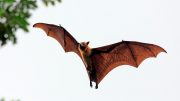

Climate Change May Have Driven the Emergence of SARS-CoV-2, the Virus That Caused the COVID-19 Pandemic
One might similarly argue that an increase in bats reduces insect vectors that negatively affect human health.Why is it that academics only see the negative effects of climate change?Do they subscribe to the meme 'If it bleeds, it leads' as does the MSM?
The authors can’t be certain what percentage of the 1 deg C warming over the last century that humans are responsible for, they ignore anthropogenic land-use changes, they only casually mention the probable role that Chinese ‘wet markets’ had on introducing the virus to a human population center,and yet they are calling for 'taking decisive action to mitigate climate change.'
'The researchers emphasized the need to limit the expansion of urban areas, farmland, and hunting grounds into natural habitat to reduce contact between humans and disease-carrying animals.'Years ago, China attempted to reduce its population growth, with only limited success.How do the researchers expect to implement this suggestion if the population continues to increase?Restrict everyone to cities that only grow vertically, and feed them Soylent Green?
There is an old joke that those who seek higher education become specialized and end up knowing more and more about less and less until they know everything about nothing.These academics appear to be a good example of educated people who fit this description.
I’m so tired of the hand waving about the evils of supposedly human-caused global warming!
Posted On: 2021-02-05T09:00:00
Posted By: Clyde Spencer
Has it occurred to these ‘experts’ that as Chinese moved into cities — in the greatest human migration in the history of mankind — they began to rely on fossil fuels instead of wood and charcoal as they had for centuries?Thus, pressure on trees diminished, allowing the trees to fill an ecological niche that they were well adapted for.Much the same thing happened in the USA when farms in New England were abandoned and the trees reclaimed the land, well before ‘global warming’ became an issue.
These academics have trouble seeing the world as it really is, instead having their interpretations colored by the paradigm of the times.
Posted On: 2021-02-05T09:09:00
Posted By: Clyde Spencer
It will be reported as so in the textbooks of the future.Climate change is causing alot of serious problems, little things, with big impacts.Always brushed aside as temporary statistical correlations and/or far out blips on the 6 Sigma curve.
Posted On: 2021-02-06T02:02:00
Posted By: Joe Milosch
Again, you can only see the negative side!There is an old saying that there are always two sides to a story.If you are only hearing on side, then you are only hearing a half-truth!
Posted On: 2021-02-06T10:59:00
Posted By: Clyde Spencer
Not Science.Politics.
Posted On: 2021-02-06T04:20:00
Posted By: Gerald Brennan
Gain-of-Function research on Corona Viruses (bat) had been going on at the Wuhan Virology Lab for 20+years.This is a lab that has been continuously sited for poor safety protocols.The CCP still has not allowed inspection of that lab since the outbreak.Not as convenient as a supposition, but more facts to support it.
Posted On: 2021-02-06T08:46:00
Posted By: Gerald Fredrick
What about the 'Mankovich cycle'?Or do all you scientists out there know about that?
Posted On: 2021-02-09T16:08:00
Posted By: Anna Savelesky






Content Date: 2021-02-05
Download Date: 2021-05-13
Document ID: L0C04C7NM